Советские конструкторы
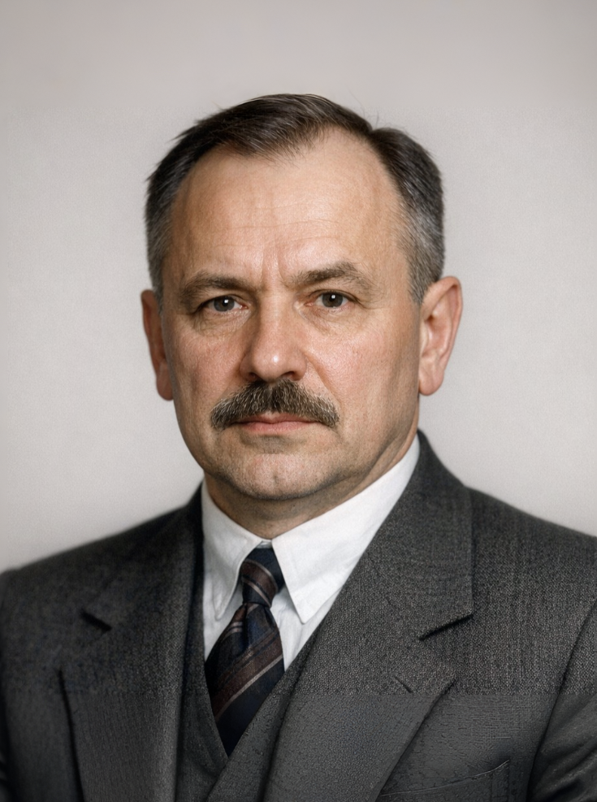
Фамилия : Шукалов
Имя : Сергей
Отчество : Петрович
Годы жизни : 1883 - после 25 апреля 1941
Место работы : Инженер Путиловского завода
Танки : МС-1 (Т-18), Т-26
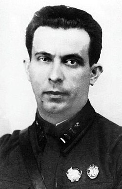
Фамилия : Гинзбург
Имя : Семен
Отчество : Александрович
Годы жизни : 1900 - 1943
Место работы : Завод №174, КБ завода №185
Танки : Т-28, Т-35
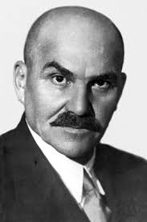
Фамилия : Фирсов
Имя : Афанасий
Отчество : Осипович
Годы жизни : 1883 - 1937
Место работы : Харьковский паровозостроительный завод
Танки : БТ-5, БТ-7
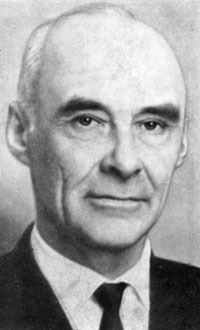
Фамилия : Козырев
Имя : Николай
Отчество : Александрович
Годы жизни : 1908 - 1983
Место работы : Завод №37
Танки : Т-37А
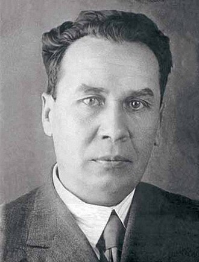
Фамилия : Кошкин
Имя : Михаил
Отчество : Ильич
Годы жизни : 1898 - 1940
Место работы : Харьковский завод №183
Танки : Т-34 (обр. 1940), A-20, A-32
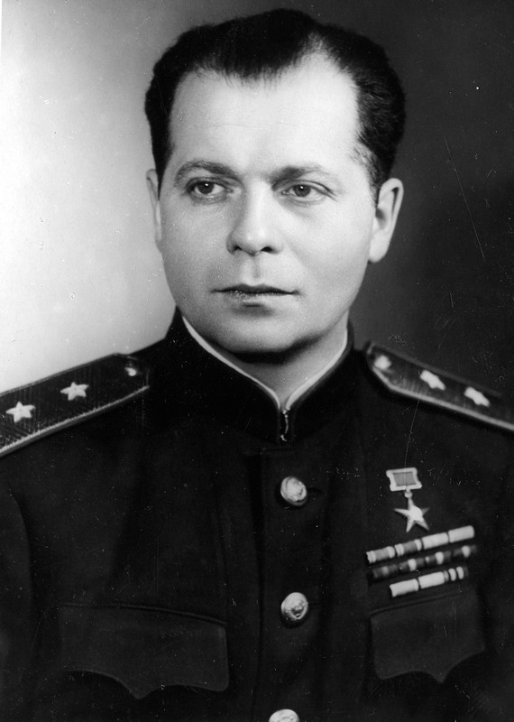
Фамилия : Котин
Имя : Жозеф
Отчество : Яковлевич
Годы жизни : 1908 - 1979
Место работы : Кировский завод, ЧТЗ
Танки : КВ-1, КВ-85, ИС-1, ИС-2, ИС-3, Т-10
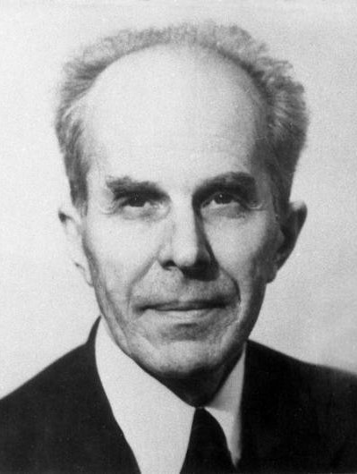
Фамилия : Астров
Имя : Николай
Отчество : Александрович
Годы жизни : 1906 - 1992
Место работы : Завод №37, ГАЗ, Мытищинский МЗ
Танки : Т-40, Т-60, Т-70
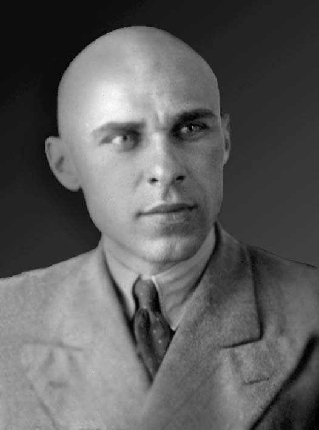
Фамилия : Морозов
Имя : Александр
Отчество : Александрович
Годы жизни : 1904 - 1979
Место работы : Харьковский завод №183
Танки : Т-34-85, Т-44, Т-54, Т-64
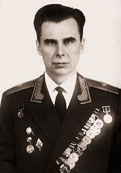
Фамилия : Карцев
Имя : Леонид
Отчество : Николаевич
Годы жизни : 1922 - 2013
Место работы : Уралвагонзавод
Танки : Т-55, Т-62, Т-72
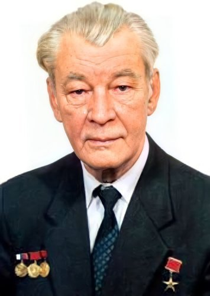
Фамилия : Попов
Имя : Николай
Отчество : Сергеевич
Годы жизни : 1931 - 2008
Место работы : Кировский завод (Спецмаш)
Танки : Т-80, Т-80У
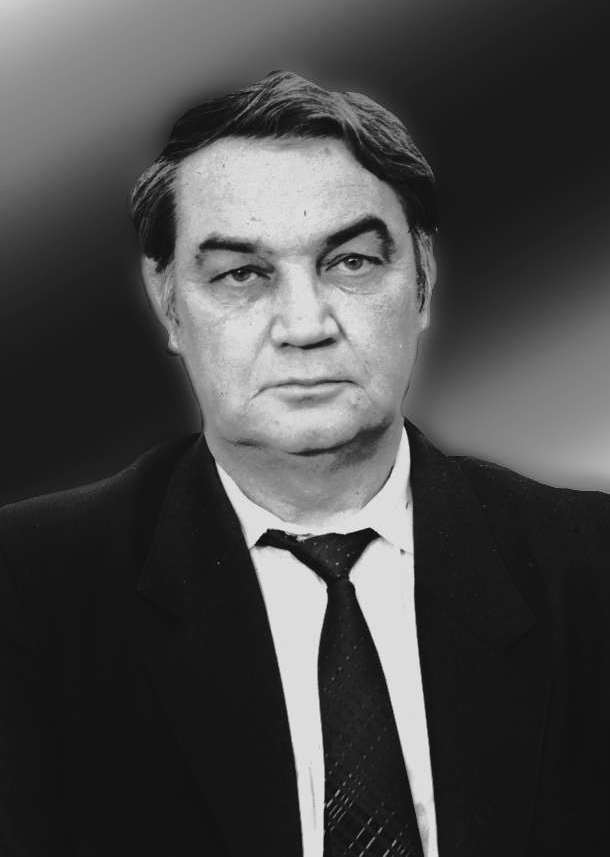
Фамилия : Поткин
Имя : Владимир
Отчество : Иванович
Годы жизни : 1938 - 1999
Место работы : Уралвагонзавод
Танки : Т-90, Т-90А